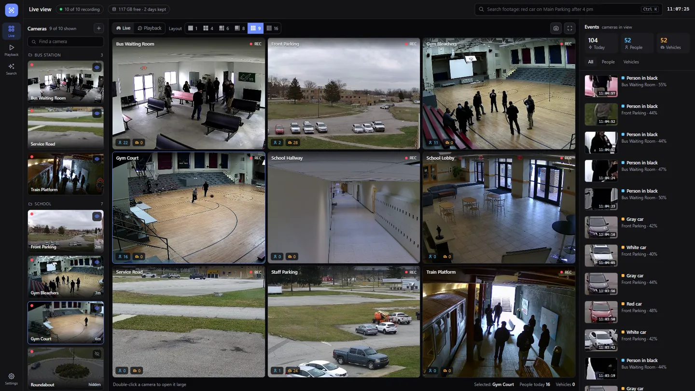
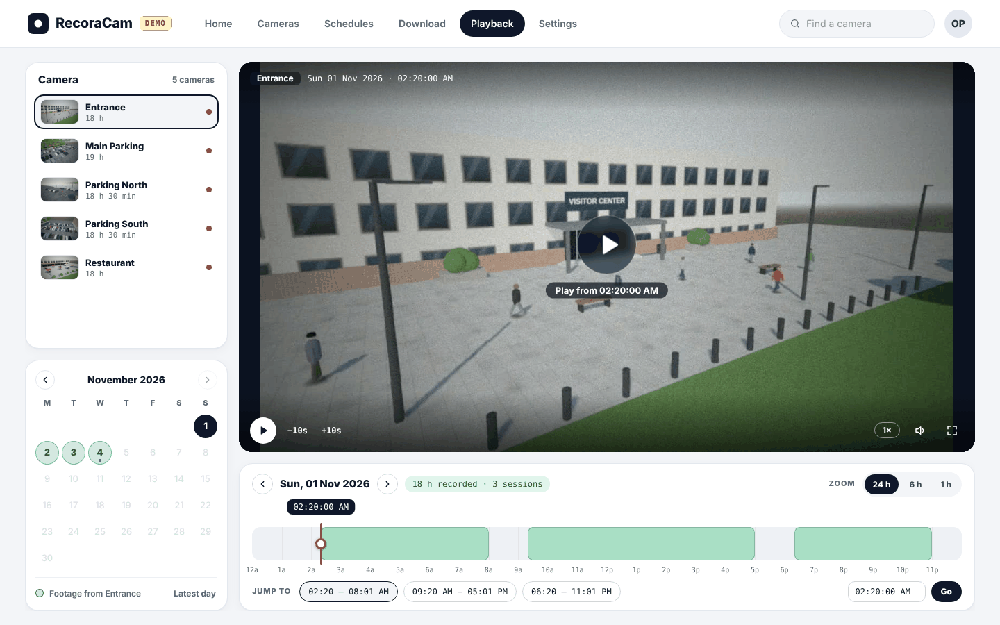

My own products, AI Video Investigator and RecoraCam NVR, followed by the client systems I've designed and shipped: Qt/C++ and JUCE desktop apps, screen recording, real-time audio and video, trading tools and embedded hardware.
01Products
Designed, built and maintained by me.

2026 · C++17 / Qt 6 · Local AI
AI Video Investigator
Ask your cameras what happened.
Finding one moment in hours of camera footage usually means scrubbing video by hand. AI Video Investigator records the cameras, detects every person and vehicle, and lets you search the footage in plain English.
Type “white car at Staff Parking” or “people sitting on a bench” and jump to the moment. Watch live, scrub a 24-hour timeline and cut the clip in a second. Footage, detection and search stay on the PC.
YOLOv8 detection on ONNX Runtime, tracked so each object is one event
Plain-English search, with an optional local language model (llama.cpp)
Visual search with CLIP: describe how it looks, results ranked by match
WebRTC live wall, 24-hour timeline and clip export without re-encoding
YOLOv8 runs on ONNX Runtime and tracks each person and vehicle, so one object becomes one event, not hundreds of frames.
Search
Plain-English queries become filters for type, colour and camera. CLIP adds visual search for things the filters can't describe.
Local first
Recording, detection and search all run on one PC. No footage leaves the machine, and there is no subscription.
Demo footage: MEVA dataset by Kitware Inc. and IARPA (mevadata.org), CC BY 4.0.

2026 · Python · Open source (LGPL v3)
RecoraCam NVR
Schedule it. Play it back. Download the clip.
Small sites with a few IP cameras usually choose between expensive cloud plans and clunky vendor software. Neither lets you just schedule recording and pull out one exact clip.
RecoraCam plans the week on a 15-minute grid, lets you scrub a 24-hour timeline to find a moment, and exports the exact clip as MP4. Every frame stays on your own disk.
Weekly 15-minute scheduling grid for many cameras
Records RTSP, RTMP, HTTP, UDP and SRT without re-encoding
24-hour timeline playback with 6 h and 1 h zoom
Exact-clip MP4 export, with GPU or CPU transcoding when needed
Weekly 15-minute grid for one or many cameras, with quick fills for 24/7, business hours, nights and weekends. Plans can be copied between cameras.
Reliability
A supervisor restarts failed recorders with growing delays. Every 60 seconds, a check restarts any camera that should be recording but isn't.
Storage
When the disk passes a limit (85% by default), the oldest days are deleted first across all cameras, at times you choose.
02Client work
Desktop software for audio, video and real-time data. Open a project to see its screens.
2.1StreamboxQt 6 · C++Windows & macOS
A desktop music streaming client for Windows and macOS. I moved the codebase from Qt 5.15 to 6.7, added a universal macOS build with a signed DMG, and redesigned the UI (login, playlists, charts, search).
Logging in froze on large libraries (1,800+ songs). Batching the SQLite writes into scoped transactions made sync about 31× faster. I also added AES encryption for user data with OpenSSL, and connected the app to a companion DJ app through a shared database.
A desktop app that lets DJs record live sets and upload them to the cloud automatically. It supports live and offline recording, with an upload queue that retries failed uploads and checks credits against a REST backend.
I added session history, DJ controller support, IP-based location for tagging venues, code signing and Inno Setup installers. DJs get a stable one-click recording workflow that matches the client's Android app, and sets are stored on Wasabi object storage.
Users needed one product that reliably records on-screen video and audio on both Windows and macOS. I worked on the capture engine and the cross-platform UI.
Traders needed a fast desktop client to run options strategies and watch them in real time. I built it in Qt/C++.
Users build and run algorithms, then follow trades, positions, missed trades and running strategies in docked panels. The app connects to exchange sockets and keeps data in a local database.
C++ / QtWebSocketsReal-time dataLocal database
Private client project
2.7TORQREST · WebSocketDesktop
A trading terminal with a dashboard, market watch lists, a live index ticker, orders and positions, and algo tools.
Trading data comes from a REST API, live prices stream in over WebSocket, and the app stores its data in a database. An activity log shows each session event as it happens.
REST APIWebSocketLive market dataDatabase
Private client project
03Earlier work
Camera, streaming and embedded systems at Vappica and NiLogic, 2011–2022.
Qt · OpenCV · HLSNetwork camera recorder with analytics
A Qt recorder with HLS live view on web and desktop, plus object detection and recognition, motion detection and email alerts.